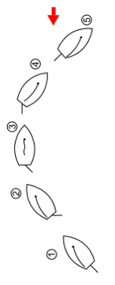

Zwrot przez sztag
Zwrot przez sztag:
1. Wychylamy ster, aby łódź zaczęła skręcać pod wiatr
2. Skracamy wychylenie żagla
3. Czekamy aż żagiel zacznie pracować z przeciwnej strony
4. Wychylamy stopniowo żagiel
5. Prostujemy ster
